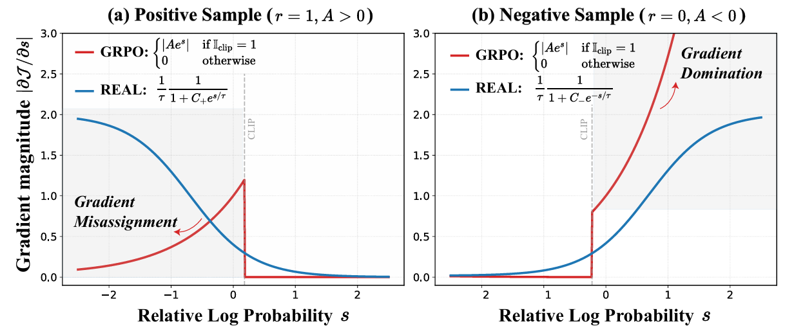
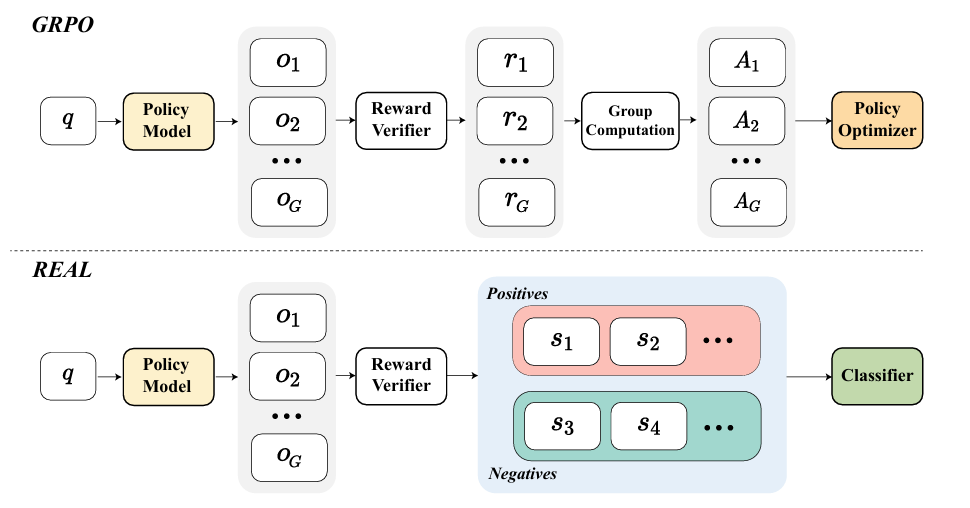

Rewards as Labels: Revisiting RLVR from a Classification Perspective
版本依赖：ms-swift>4.0
Rewards as Labels: Revisiting RLVR from a Classification Perspective 针对GRPO提出把奖励视为标签，在group内分类而不是计算advantage，从而将策略优化问题转化为分类问题，以此解决GRPO Loss中存在的正样本梯度错配与负样本梯度主导问题。
背景与动机
GRPO目标函数
$$ J_{\mathrm{GRPO}}(\theta)=\mathbb{E}{q,o\sim\pi{\mathrm{od}}(\cdot|q)}\left[\frac{1}{|o|}\sum_{t=1}^{|o|}\left(\min\left(\rho_tA_t,\mathrm{clip}(\rho_t,1-\epsilon,1+\epsilon)A_t\right)\right)\right] $$
其中$\rho_t=\frac{\pi_\theta(o_t|q)}{\pi_{\mathrm{old}}(o_t|q)}$为相对概率，$A_{t}$为优势函数，故梯度为：
$$ \nabla_{\theta} J_{\mathrm{GRPO}} = \mathbb { E } \left[ \frac { 1 } { | o | } \sum _ { t = 1 } ^ { | o | } \mathbb { I } _ { \mathrm { clip } } \cdot A _ { t } e ^ { s _ { t } } \nabla _ { \theta } \log \pi _ { \theta } \left( o _ { t } | q \right) \right] $$
其中$s_t=\log\frac{\pi_\theta(o_t|q)}{\pi_{\mathrm{old}}(o_t|q)}$作为token的相对对数概率，$\mathbb { I } _ { \mathrm { clip } }$为指示函数
故 GRPO 对单 token 的梯度权重为：
$$ |\mathcal{W}{\mathrm{GRPO}}|=\left{ \begin{array} {ll}\left|A\cdot e^s\right|, & \mathrm{if~}\mathbb{I}{\mathrm{clip}}=1, \ 0, & \text{otherwise.} \end{array}\right. $$

正样本的梯度错配（Gradient Misassignment）：对正样本来说，随着相对概率$s$变小，梯度更新幅度反而越弱。这违背直觉，因为模型对“不太自信”的正确 token 本来就需要更大的更新幅度来强化，但更多的梯度权重却放到更“自信”的 token，没学好的 token 得不到足够的重视。
负样本的梯度主导（Gradient Domination）：对负样本来说，随着相对概率$s$变小，梯度更新幅度呈指数级增加。这意味着，只要出现几个模型“盲目自信”的错误 token，它们产生的巨大梯度就会把同组内其他负样本的信号淹没。由于缺乏上限保护，模型在处理这些错误样本时可能会产生过大的参数更新，让训练过程变得不太可控。
为解决上述问题，Real提出将奖励直接视为标签然后进行组内的样本分类训练

分类的logits分值设计：
$$ \bar{s}^k=\frac{1}{|o^k|}\sum_{t=1}^{|o^k|}\left(\log\frac{\pi_\theta(o_t^k\mid q)}{\pi_{\mathrm{old}}(o_t^k\mid q)}\right) $$
$\bar{s}^k > 0$: 表示该样本在当前策略下生成的概率比旧策略整体更高，模型倾向于增强该样本。
$\bar{s}^k < 0$: 表示该样本在当前策略下生成的概率比旧策略整体更低，模型倾向于抑制该样本。
损失函数设计：
$$ \mathcal{L}{REAL}=\log\left(1+\sum{\mathcal{O}+}e^{-\bar{s}^i/\tau}\right)+\log\left(1+\sum{\mathcal{O}_-}e^{\bar{s}^j/\tau}\right) $$
梯度特性： $$ |\mathcal{W}{\mathrm{REAL}}|= \begin{cases} \frac{1}{\tau}\frac{1}{1+C{+}e^{\bar{s}^{k}/\tau}}, & r=1 \ \ \frac{1}{\tau}\frac{1}{1+C_{-}e^{-\bar{s}^{k}/\tau}}, & r=0 & & & \end{cases} $$
参数设置
参数 |
类型 |
默认值 |
说明 |
|---|---|---|---|
|
|
- |
设置为 |
|
|
|
温度参数，控制决策边界锐度 |
训练脚本参考
注意事项
设置参数时，确保 per_device_train_batch_size 能够被 num_generations 整除，以此保证单个训练batch中能拿到完整的 group 进行分类。